⌁
التنمية المجتمعية
تمكين المجتمعات المحلية وبناء مبادرات يقودها أبناؤها.
↗نعمل مع المجتمعات المحلية لبناء حلول تنموية تحفظ الكرامة، وتفتح فرصًا حقيقية، وتترك أثرًا يستمر.
مؤسسة يمن لاند للتنمية الإنسانية مؤسسة يمنية تعمل على دعم المجتمعات وتعزيز قدرتها على مواجهة التحديات، من خلال برامج ومبادرات تنموية وإنسانية تستجيب للاحتياجات الفعلية.
تعرف على رؤيتنا ورسالتنا ↗نصمم تدخلاتنا بالشراكة مع الناس، وبما يراعي خصوصية كل مجتمع.
تجارب وشراكات إنسانية وتنموية نفذتها المؤسسة في عدد من المحافظات اليمنية.
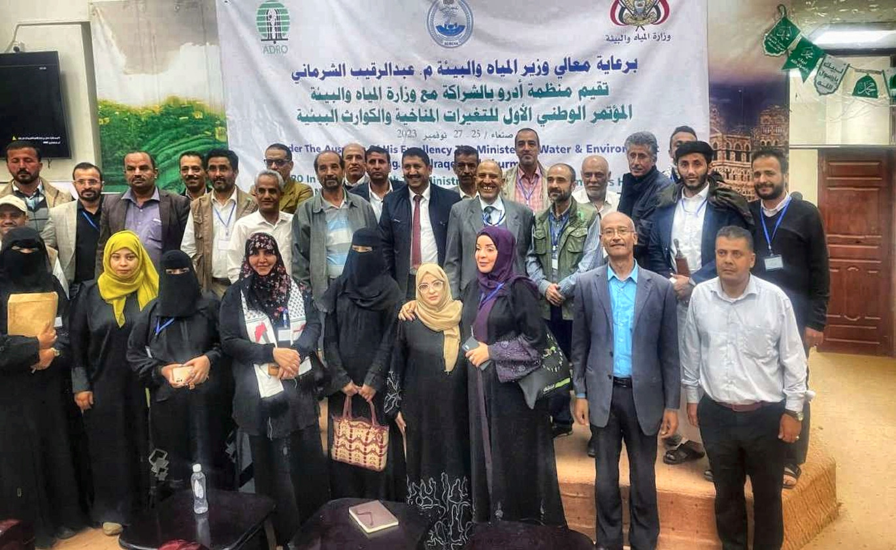
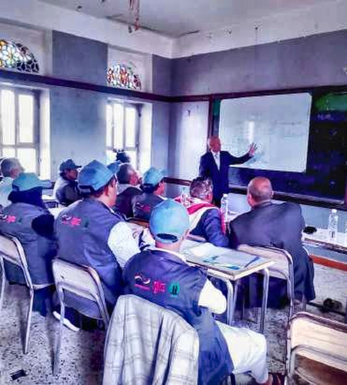
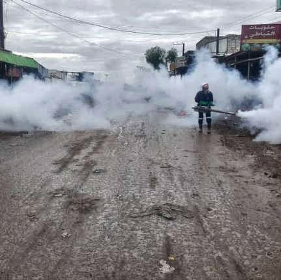
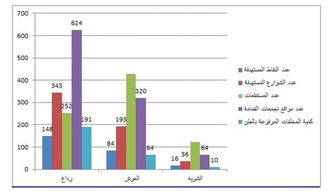
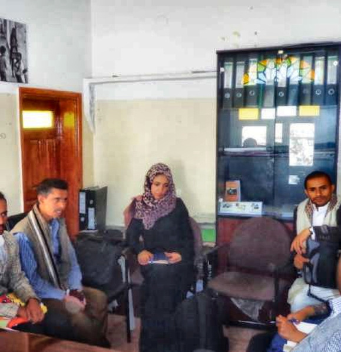
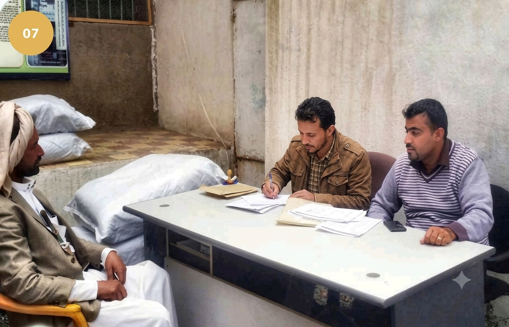
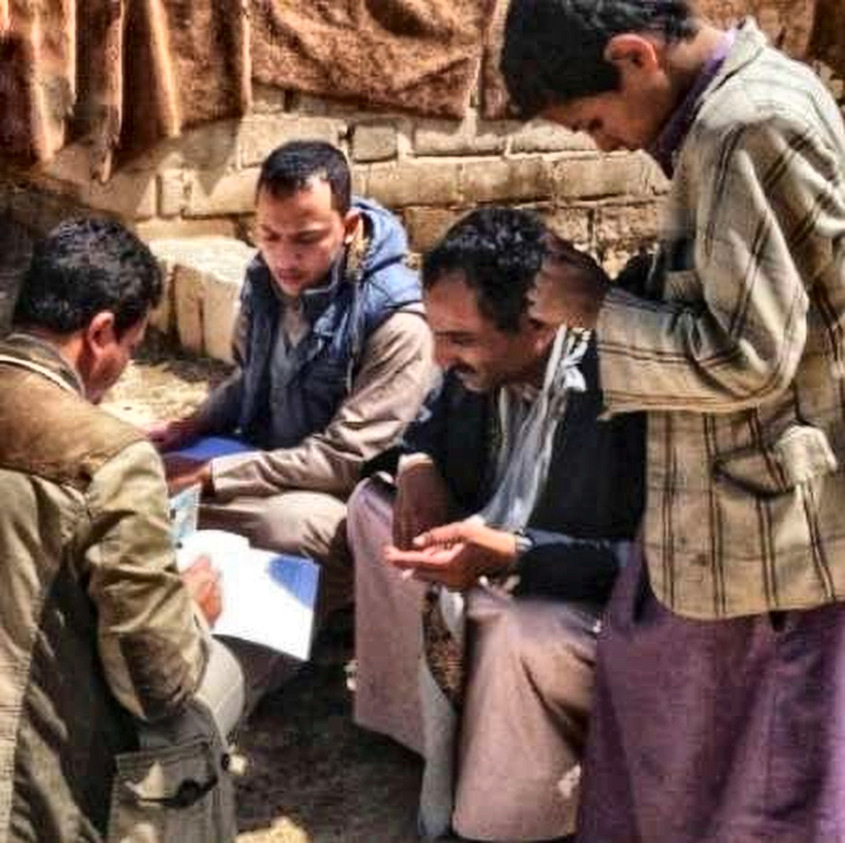
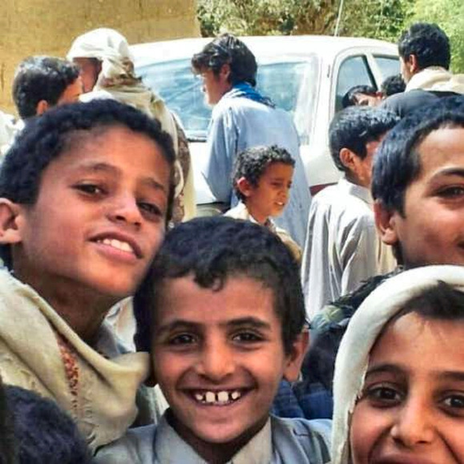
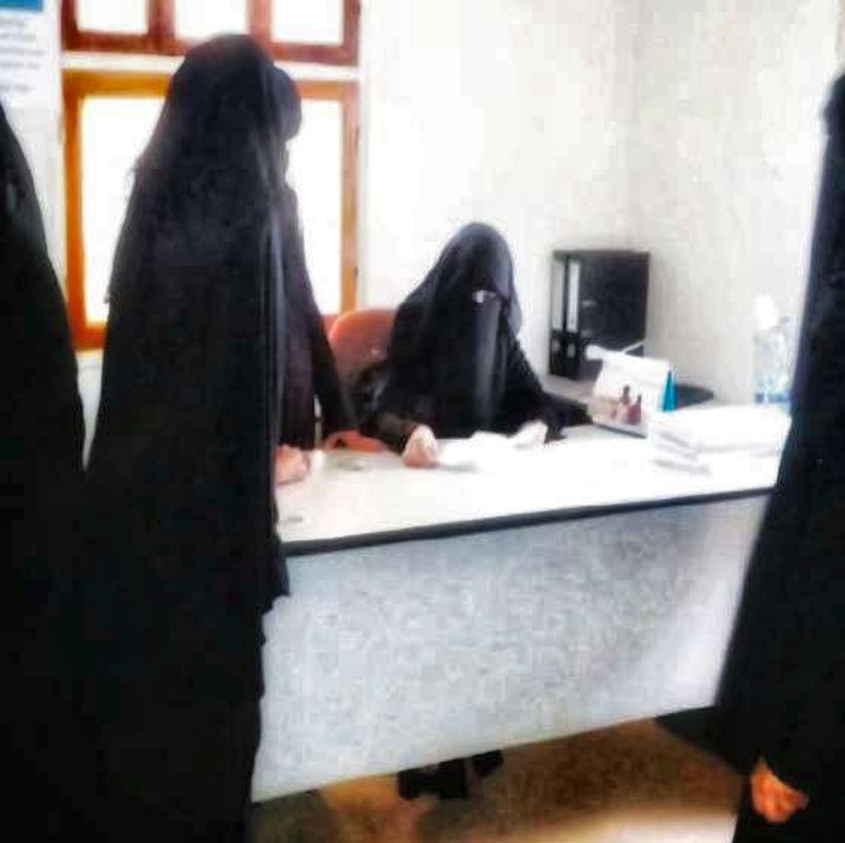
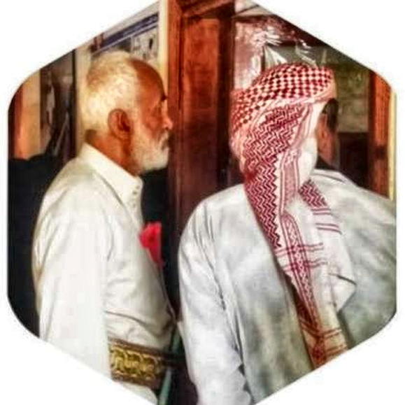
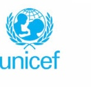
UNICEF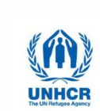
UNHCR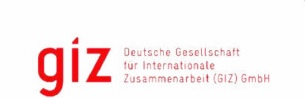
GIZ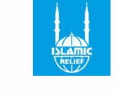
Islamic Relief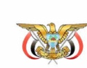
MWE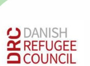
Danish Refugee CouncilCOCEPAكل شراكة، وكل مبادرة، وكل يد نمدها تساهم في بناء مستقبل أكثر أمانًا وإنصافًا.
كن شريكًا في الأثرنرحب بتواصلكم وشراكاتكم ومقترحاتكم.